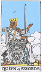

<html>


<head>


<title>The Annotated "Dire Wolf"</title>


</head>


<body>


<i>"I cut my deck to the Queen of Spades, but the cards were all the same"</i>


<h2>The <i>Annotated</i> "Dire Wolf"</h2>


An installment in <a href="gdhome.html"> The


<i>Annotated</i> Grateful Dead Lyrics.</a><br>


By <a href="david.html">David Dodd</a><br>


1998-1999 Research Associate, Music Dept., University of California, Santa Cruz


<hr>


<a href="copyrigh.html">Copyright notice</a>


<hr>


<a href="#title"><b>"Dire Wolf"</b></a><br>


Words by Robert Hunter; music by Jerry Garcia<br>


Copyright Ice Nine Publishing; used by permission


<p>


<blockquote>


In the timbers of <a href="#fennario">Fennario</a><br>


the wolves are running round<br>


The winter was so hard and cold<br>


froze ten feet neath the ground<br>


<p>


<a href="#murder">Don't murder me</a><br>


I beg of you don't murder me<br>


Please <br>


don't murder me<br>


<p>


I sat down to my supper <br>


T'was a bottle of <a href="#red">red whiskey</a><br>


I said my prayers and went to bed<br>


That's the last they saw of me<br>


<p>


Don't murder me<br>


I beg of you don't murder me<br>


Please <br>


don't murder me<br>


<p>


When I awoke, the <a href="#dire">Dire Wolf</a><br>


Six hundred pounds of sin<br>


Was grinnin at my window<br>


All I said was "come on in"<br>


<p>


Don't murder me<br>


I beg of you don't murder me<br>


Please <br>


don't murder me<br>


<p>


<a href="#wolf">The wolf</a> came in, I got my cards<br>


We sat down for a game<br>


I cut my deck to the <a href="#queen">Queen of Spades</a><br>


but the cards were all the same<br>


<p>


Don't murder me<br>


I beg of you don't murder me<br>


Please <br>


don't murder me<br>


<p>


In the backwash of Fennario<br>


The black and bloody mire<br>


The Dire Wolf collects his due<br>


while the boys sing round the fire<br>


<p>


Don't murder me<br>


I beg of you don't murder me<br>


Please <br>


don't murder me<br>


</blockquote>


<hr>


<h3><a name="title">"Dire Wolf" </a></h3>


Recorded on


<ul>


<li><cite><a href="discog2.html#workingman">Workingman's Dead</a></cite>


<li><cite><a href="discog2.html#reckoning">Reckoning</a></cite>


<li><cite><a href="discog1.html#dick4">Dick's Picks, vol. 4</a></cite>


<li><cite><a href="discog1.html#dick5">Dick's Picks, vol. 5</a></cite>


</ul>


<p>


Covered by the New Riders of the Purple Sage on <cite><A HREF="http://www.amazon.com/exec/obidos/ASIN/B000000SUE/theannotategr-20">Live in Japan</A></cite>.


<p>


First known live performance: June 7, 1969, at California Hall in San Francisco.


Performed usually several times each year since, peaking in 1978, with 27


performances.


<p>


Hunter's <a href="http://www.dead.net/RobertHunterArchive/files/newjournal/50journal_9.10.01.html">journal</a> entry from 7/29/96:


<blockquote>


7/29<br>


Just in from the midnight swim that transforms me from a stiff middle aged man into a loose guy in his


prime. There's a large house visible across the fields which is reputed to be haunted by the ghost of a dog,


probable inspiration for the Hound of the Baskervilles (an old local family). Funny tie in there. The song


"Dire Wolf" was inspired, at least in name, by watching the Hound of the Baskervilles on TV with Garcia.


We were speculating on what the ghostly hound might turn out to be, and somehow the idea that maybe it


was a Dire Wolf came up. Maybe it was even suggested in the story, I don't remember. We thought Dire


Wolves were great big beasts. Extinct now, it turns out they were quite small and ran in packs. But the


idea of a great big wolf named Dire was enough to trigger a lyric. As I remember, I wrote the words


quickly the next morning upon waking, in that hypnogogic state where deep rooted associations meld


together with no effort. Garcia set it later that afternoon.


</blockquote>


<p>


Blair Jackson, in his <cite><a href="biblio.html#jackson">Grateful Dead: the Music


Never Stopped</a></cite>, quotes a Michael Lydon interview with Hunter


on the subject of "Dire Wolf":


<blockquote>


"The situation that's basically happening in 'Dire Wolf' is it's the middle


of winter, and there's nothing to eat for anybody, and this guy's got a


little place. Suddenly there's this monster, the dire wolf, and the guy is


saying, 'Well, obviously you're going to come in, and why don't you pull


up a chair and play some cards?' But the cards are cut to the queen of


spades, which is the card of death, and all the cards are death at this


point. The situaion is the same as when a street dude, an up-against-the-


Establishment guy, approaches the Establishment and says, 'We can coexist.'


<p>


"Also, 'Dire Wolf' is <a href="#behemoth">Behemoth</a>; that monster,


the Id; the subconscious--it's that, too. Out there in a barren setting,


stripped; there's no setting really, just blank white, and these characters


in the middle of it."--p. 108-109


</blockquote>


<hr>


<blockquote>


<a name="behemoth"><em>"Behemoth</em></a>: A mythical beast described in


Job 40.15-24 as the first of God's creations, an animal of enormous strength


that inhabits the river valleys. ... In view of the references to Behemoth


in the apocrypha and pseudepigrapha, it is more likely that it


is a form of the primeval monster of chaos, defeated by Yahweh at the beginning


of the process of creation; in fact, according to Job 40.24, the monster


is represented as tamed by him and with a ring through his lip, so that like


Leviathan he has become a divine pet. According to later Jewish tradition,


at the end time Behemoth and Leviathan will become food for the righteous."


--Michael D. Coogan in <cite><a href="biblio.html#metzger">The Oxford


Companion to the Bible</a></cite>.


</blockquote>


<hr>


<h3><a name="dire">Dire wolf</a></h3>


From Bjorn Kurten and Elaine Anderson's <cite><a href="biblio.html#kurten">Pleistocene Mammals of


North America</a></cite>:


<blockquote>


"Dire Wolf, <i>Canis dirus</i>... One of the most common mammalian


species in the Rancholabrean, the dire wolf has been found at more than


80 sites in North America ranging from late Illinoian and Sangamonian to late


Wisconsinan. ...The range covers most of the United States and Mexico


and extends to Peru in the south.


<p>


"Equalling a large gray wolf in size, <i>Canis dirus</i> was markedly


heavier of build, with a very large and broad head and sturdy limbs


with relatively short lower segments. The dentition was more powerful


than that of any other species of <i>Canis</i>, the carnassial


teeth being, on the average, much larger than those of <i>Canis lupus</i>.


The braincase is relatively smaller than that of the grey wolf. The dire


wolf may be referred to the subgenus <i>Aenocyon</i>, of which it is


the sole known species." -- p. 171


</blockquote>
<p>
And this note from a reader:
<blockquote>
Subject:
        Annotated GD Lyrics: Dire Wolf<br>
   Date:
        Tue, 9 Oct 2001 14:14:55 +1000	  <br>
   From:
        John Low <JLow@bmcc.nsw.gov.au>		  <br>

<p>
Hello David,
<p>
Greetings from down under - actually, the Blue Mountains west
of Sydney!
<p>
Though I've been enjoying your fantastic GD web site for some
time, I'm only
now getting around to letting you know. As a long time Dead
fan (though,
regrettably, I never got to see them live) your site has
become a regular
internet destination for me. It has enriched my knowledge and
appreciation
of their music immensely.
<p>
In line with your project philosophy, expressed in the
metaphor of the
mirrorball "shedding shards of light without really claiming
to illuminate
anything", I wonder if I could make a comment about "Dire
Wolf"?
<p>
Back in the early 1970s I spent some time in the Inverness -
Strathspey
region of Scotland and got interested in the local stories of
a bloodthirsty
medieval freebooter known as the Wolf of Badenoch, who
terrorised the
district in the 14th Century.  The Wolf was actually Alexander
Stewart, Earl
of Buchan and Lord of Badenoch, the son of Scotland's King
Robert II. In
1389, after deserting his wife and taking up with another
woman, he was
denounced by the Church and went feral. In 1390 he and his
men, now a
lawless band of 'wolves', burned and ransacked the towns of
Forres and
Elgin, the latter the ecclesiastical centre of the Bishopric
of Moray and
possessor of a beautiful cathedral (which he destroyed). He
was apparently a
man of immense stature with flowing black hair and a beard to
match, some
even describing him as half human, half beast. To the
terrified local
population he was indeed a "dire wolf".
<p>
There is, however, one particular legend concerning the
circumstances of his
death ca.1405 that offers a curious and ironic parallel to the
narrative of
the Hunter/Garcia song. This legend describes how a sinister
figure dressed
in black was seen to enter the Wolf's stronghold at Ruthven
Castle one dark
night. Through a window villagers watched as the black
stranger engaged the
Wolf in a game of chess that went on for several hours.
Finally the stranger
moved a chess piece, rose from the table and called 'check'
and then
'checkmate'. Immediately there was an almighty crack of
thunder and
lightening (another version of the legend says the room was
suddenly
engulfed by fire) and the watching villagers fled in terror.
<p>
A terrible storm raged all night and in the silence of the
morning the
blackened bodies of several of the Wolf's men were found lying
outside the
castle walls. The Wolf himself was discovered dead in the
banqueting hall,
his body seemingly unmarked, though the nails in his boots had
all been
ripped out. Even to this day, so we are told, the Devil is
sometimes seen in
Ruthven Castle playing chess for the Wolf of Badenoch's soul.
<p>
Knowing such stories has always given a Scottish resonance to
my response to
"Dire Wolf", an otherwise a very American song. Hope I haven't
bored you
with the details!
<p>
Once again, many thanks for your great web site.
<p>
With best wishes,
<p>
John Low<br>
[Local Studies Librarian, <br>
Blue Mountains City Library]


</blockquote>

<hr>


<h3><a name="fennario">Fennario</a></h3>


Mentioned in the folk song, <a href="http://www.contemplator.com/folk2/fyvie.html">"The Bonnie Lass of Fenario"</a>.
<p>
Variously titled "Peggy-O", "Fennario", "The Bonnie Lass of Fyvie-O", "Pretty


Peggy-O", "Pretty Peggy of Derby," etc.


<p>


The relevant line is: "As we marched down to Fenario...", which in turn is


spelled variously as "Fernario", "Finario", "Fennario", "Finerio," etc.


<p>


The question becomes, is this really a place? I've seen the question posed


and debated, usually facetiously, on many a Grateful Dead conference and


email exchange, but no one has yet come up with anything approaching


a definitive answer. So, in the absence of the definitive, I'm going to


go out on a limb and propose a theoretical answer. This answer lies within


the realm of "folk etymology," since I am not a trained etymologist.


<p>


"Fennario" seems related to the word "fen", defined by the <cite><a href="biblio.html#oxford1">


OED</a></cite> as "Low land covered wholly or partially with shallow water,


or subject to frequent inundations; a tract of such land, a marsh. ...esp.


<em>the fens</em>: certain low-lying districts in Cambridgeshire,


Lincolnshire, and some adjoining counties."


<p>


Combining this root with the suffix "ario", could indicate "in the general


vicinity, i.e. <em>area</em> of the fens.


<p>


Hunter uses the word "fens" in another lyric, which seems to lend support


to the identification of "Fennario" as a district of marshy lands; namely,


in the "Ivory Wheels/Rosewood Track" lyric of the <em>Terrapin</em> suite:


<blockquote>


"The demon's daughter used to lay for gin<br>


In a shack way back on the skirts of the fens<br>


Of Terrapin."


</blockquote>


<p>


And marshes appear elsewhere in Hunter's lyrics as well: the "mangrove


valley" and "Marsh King's Daughter" of <a href="moon.html">"Mountains of


the Moon"</a>.


<p>


So Hunter's "Fennario" is a rural, wooded, marshy region of the imagination,


which bears not particular relation to the actual geographic "Fenario"


referred to in the "Peggy-O" folk song lyric and its variants. (Child, in his


<cite><a href="biblio.html#child">English and Scottish Popular Ballads</a></cite>,


places the "Peggy" ballads within the tradition of ballads gathered under


#299: "Trooper and Maid."  Sharp, in his <cite><a href="biblio.html#sharp">


English Folk Songs from the Southern Appalachians</a></cite>, names the


collection of tunes gathered under #95: "Pretty Peggy-O.")


<p>


This note from a reader:


<blockquote>


Date: Tue, 23 Jan 1996 12:49:25 -0700 (MST)<br>


From: CHERNUS IRA R chernus@spot.Colorado.EDU<br>


Subject: Fenario


<p>


Hello David, <br>


    I was just showing a friend your annotated lyrics.  Since he'd once


seriously considered doing his dissertation in the English Dept. on the


Dead, he was very excited.  You'll probably hear from him one day.  We


checked out your comments on Dire Wolf.  Impressive!  But I've always


assumed that Fenario in that song was to be linked directly with the


Fenris wolf, simply on the basis of similarity in sound.  What do you


think?  If so, does it throw any light on the Dead's version of Peggy-O


Keep up the good work!


<p>


Ira


</blockquote>
<p>
And another note on the topic from a reader:
<blockquote>
Subject: Fennario<br>
Date: Tue, 2 Nov 1999 10:16:50 -0800 (PST)<br>
From: kirsten valentine cadieux <kvcad@yahoo.com><br>
<p>

I noticed your etymological creation for Fennario
(Dire Wolf and Peggy-o), and can add:
<p>
fens aren't only an English phenomenon, and to the
English settlers, the Louisiana bayou would have been
fens.  Since Sweet William-O ends up "buried in the
Lou'siana country-o", it seems probable that fen-ario
is the area of the bayou.  (do we have a date for
Peggy-o? Is it civil war?)
<p>
-Valentine.


</blockquote>

<p>
This note from a reader:
<blockquote>
In the Dire Wolf section, you seem to give Hunter an aweful lot of credit for the word by saying he was stretching out the word "fen".  That's quite a stretch.  Then you mention that the word appears in "Peggy-O".  I think it's obvious that Hunter just lifted it from "Peggy-O" because it fit in "Wolf".
<p>
Further along you include Alan Trist's explanation to David Gans that Fennario was a sort of nonsense word that was just invented for a place which had the right number of syllables to fit the line. I read that interview a long time ago and thought that that made sense.  Incredibly, then, Trist goes on to say that "Fennario" is a good word if you need four syllables whereas a word like "Fyvie-O" would be a good three syllable word. What's missed in this section is actually included in the Peggy-O section and that is that Peggy-O comes from a Scottish ballad called "The Bonnie Lass of Fyvie-O".  Fyvie is a real town in Aberdeenshire, Scotland.  "Fennario", then, was made up as a four syllable variation of "Fyvie-O".
<p>
You say that the American source of "Peggy-O" is Cecil Sharp's ballad #95, "Pretty Peggy-O" and, yes, they are essentially the same song.  But you also suggest that the Scottish source of the song is Child ballad #299, usually called "The Trooper and the Maid".  The story is that a soldier seduces a maiden, tells her he must leave but will return, then when he learns that she may be pregnant he changes his mind and says, "So long".  One might also consider Child ballad #228, "Glasgow Peggy".  It's a variation where a stranger seduces Peggy and when he learns that she is pregnant he reveals that he is the Earl of the Isle of Skye (the largest island in the Heberdes) and promises to marry her.  Actually, these two ballads might have a common source, they just branched out with two totally different endings.  Neither is really the story in Peggy-O.
<p>
What I actually learned from reading these sections, however, is that Garcia threw me off long ago by calling the male character "Sweet William".  Child ballad #74, "Lady Margaret and Sweet William", is a sort of Romeo and Juliet story where she kills herself when she thinks she can't marry William and then he dies or kills himself with grief.  Since "Peggy" is a nickname for "Margaret", I had always thought that that was where Peggy-O came from.  Now I know better and I will sleep better tonight.  Thank you.  Below is a web page about Peggy-O that you may already be familiar with.  I'm actually copying this to my brother who asked me long ago about Fennario because he thinks I am all wise in all things Grateful Dead.
<p>
Pat McLaughlin

</blockquote>
<hr>


<h3><a name="wolf">The wolf</a></h3>


According to <cite><a href="biblio.html#cirlot">A Dictionary of Symbols</a></cite>:


<blockquote>


"<b>Wolf</b> Symbolic of valour among the Romans and the Egyptians. It also


appears as a guardian in a great many monuments. In Nordic mythology we are


told of a monstrous wolf, Fenris, that would destroy iron chains and


shackles and was eventually shut up in the bowels of the earth. It was also


said that, with the twilight of the gods--the end of the world--the monster


would break out of this prison too, and would devour the sun. Here, then, the


wolf appears as a symbol of the principle of evil, within a pattern of


ideas which is unquestionably related to the Gnostic cosmogony. ... The


myth is also connected with all other concepts of the final annihilation of


the world, whether by water or fire."--p. 375


</blockquote>


<p>


This summary presents an interesting link back to <a href="uncle.html#fire">


"Uncle John's Band"</a>, with its lines about knowing the fire from the


ice, which similarly summon apocalyptic associations.


<hr>


<h3><a name="murder">Don't murder me</a></h3>


Compare the folk song "I'm All Out An' Down", in Lomax: <cite><a href="biblio.html#lomaxa">


Folk Songs of North America</a></cite>:


<blockquote>


"Doncha murder me,<br>


Please, baby,<br>


Don' murder me..." --p. 583


</blockquote>


<hr>


<h3><a name="red">red whiskey</a></h3>


This note from a reader:


<blockquote>


Subject: Grateful Dead Lyrics Page (whiskey reference) <br>


Date: Thu, 3 Oct 1996 19:37:03 -0400 <br>


From: David2505@aol.com


<p>


David-


<p>


I really enjoy your annotated lyrics page.  As a whiskey drinker, I've always


wondered what was meant by the line in Dire Wolf about "red whiskey."  I


found an answer in Gary and Mardee Regan's <cite>The Book of Bourbon</cite>.  I'll quote


the paragraph (p. 34) directly:


<blockquote>


"There is solid evidence, however, that by the mid-1800s, some whiskeys were


being aged long enough to give them a decent amount of color.  In "The


Lincoln Reader," 1947, editor Paul M. Angle included a personal recollection


of one James S. Ewing, who was an eyewitness to an 1854 meeting between


Abraham Lincoln and his formidable debating rival, Stephen A. Douglas.  In


Ewing's account of the event, he referred to a decanter of "red liquor"-a


term for bourbon that would become widely used by the end of that century.


 When whiskey is first distilled, it is clear-it looks exactly like vodka.


 Only time in wood gives it color, and only time in charred wood results in


the crimson-hued  tint that is peculiar to bourbon.  So we can draw from


Ewing's reference to red liquor that in the the mid-nineteenth century <i>some</i>


whiskey was being aged in charred casks, and it was aged long enough for it


to gain bourbon's characteristic crimson hue." [Reprinted from


<cite>The Book of Bourbon and Other Fine American Whiskeys</cite> by Gary Regan and Mardee


Haidin Regan, (1995, Chapters Publishers, $29.95) in the Annotated Grateful Dead Lyrics with the


authors' permission.]


 </blockquote>


<p>


Thanks again for a beautiful web site,<br>


David


</blockquote>


<p>


Thanks, David!


<hr>


<h3><a name="queen">Queen of spades</a></h3>





The Queen of Spades corresponds to the Queen of the <a href="http://www.facade.com/attraction/tarot/" target="new">Tarot</a> suit, Swords,


and is characterized as follows:


<blockquote>


"...She stands with upraised sword. Her left hand is raised as if to signify


recognition or generosity. She is one who has suffered a great loss.


<p>


Divinatory meaning: This card means a sharp, quick-witted, keen person.


Possibly the bearer of evil or slanderous words. ... Mourning. Privation.


Loneliness. Separation."--<cite><a href="biblio.html#kaplan">Tarot Cards For Tun and Fortune Telling</a></cite>


</blockquote>


<p>


Hunter himself, in an interview with Michael Lydon, quoted in Blair Jackson's


<cite><a href="biblio.html#jackson">Grateful Dead: the Music Never Stopped</a></cite>


characterizes the card as the "card of death."

<p>

This note from a reader:

<blockquote>

Subject: dire wolf<br>

Date: Tue, 04 Feb 1997 15:25:33 -0600 (CST)<br>

From: Jack Straw <AJB5383@tntech.edu>

<p>

...

<p>

There is a short story by <a href="http://falcon.jmu.edu/~gouldsl/Pushkin/" target="new">Alexander Pushkin</a>, a Russian writer, titled "The

Queen of Spades."  In the story, a young Russian engineer kills an old woman to

learn a gambling secret.  The secret is for a card game in which the player

selects a card, and bets that the card that the dealer will draw will match it.

The old woman's ghost appears to the engineer, and tells him to bet on three,

seven, ace.  He goes to the gambling house, and wins the first two bets.  He

selects an ace for his third card, and when an ace is dealt, he tries to

collect his winnings.  The dealer kindly asks him to show his card.  He looks

at it, and it is a queen of spades, with the old woman's face on it.

<p>

but i digress... constantly.

<p>

Aaron "Stream of Consciousness" Bibb<br>

<ajb5383@tntech.edu>

</blockquote>


<hr>


Keywords: @Fennario, @wolf, @cards, @alcohol<br>


DeadBase code: [WOLF]


<hr>


First posted: May 16, 1995<br>


Last modified: November 29, 2005

<PRE>


</pre>

</body>
</html>